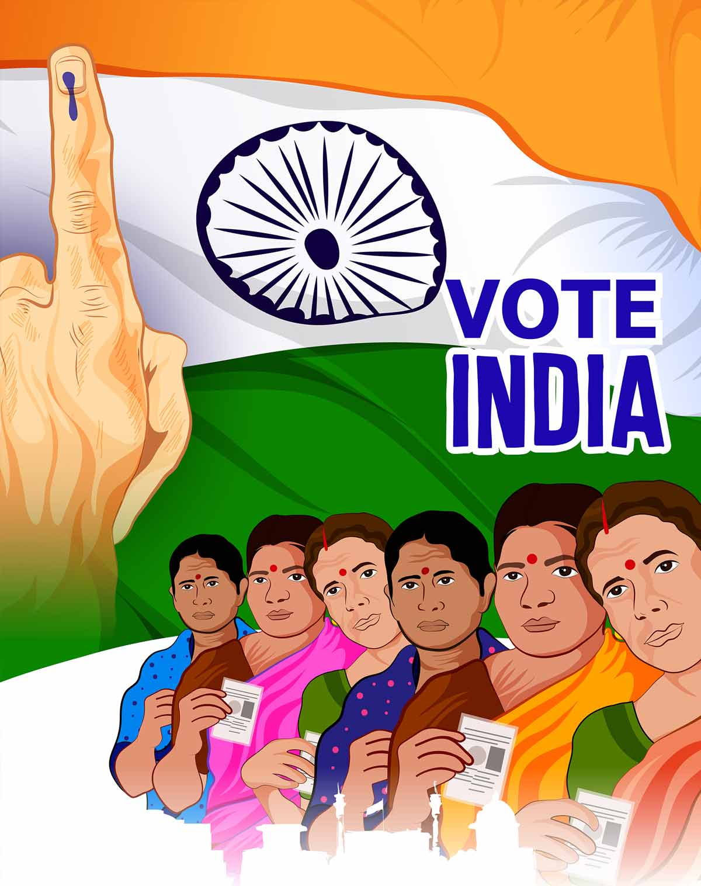

Women's Rights
Voting Rights

The feminist movements in pre-independent India played a crucial role in ensuring women’s rights were guaranteed in the Constitution. Sadly, their role in forging the republic remains underappreciated.
The most glaring example is the case of the right to vote. It is often claimed that women were “granted” this right at the same time as men. This is misleading and ignores the concerted efforts of women activists.
-
Article 326
-
This article in the Indian Constitution provides for the universal adult suffrage, stating that “the elections to the House of the People and to the Legislative Assembly of every State shall be on the basis of adult suffrage.”
-
Representation of the People Act, 1950
- This Act provides for the preparation and revision of electoral rolls, the conduct of elections, and the determination of the qualifications of voters.
-
Representation of the People Act, 1951
- This Act deals with the conduct of elections, disqualifications for membership of Parliament and State Legislatures, and other related matters.
The right to vote in India is a fundamental constitutional provision primarily guaranteed by Article 326 of the Indian Constitution.
This article enshrines the principle of universal adult suffrage, ensuring that every Indian citizen aged 18 or older has the right to participate in elections for the House of the People (Lok Sabha) and Legislative Assemblies of States (Vidhan Sabha).
The voting age was lowered from 21 to 18 in 1988 through the 61st Amendment Act, marking a significant democratic reform.
The Election Commission of India is responsible for overseeing elections and safeguarding the fair and free exercise of this right, typically conducted through secret ballots.